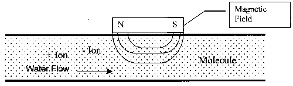
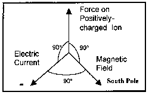
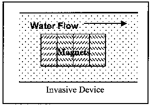
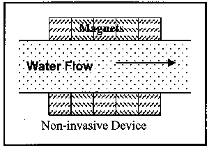
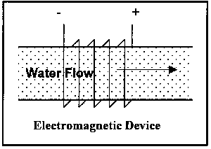
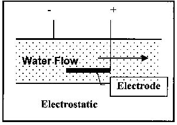
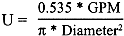
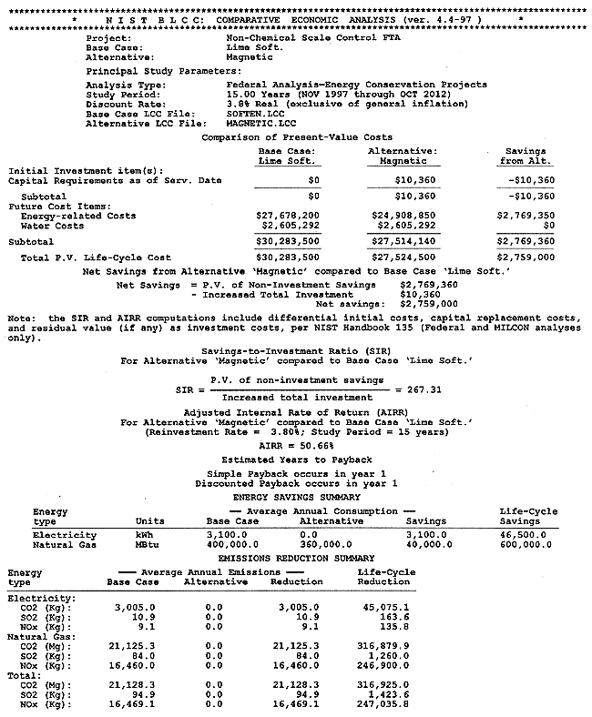

Abstract
The magnetic technology has been cited in the literature and investigated since the turn of the 19th century, when lodestones and naturally occurring magnetic mineral formations were used to decrease the formation of scale in cooking and laundry applications. Today, advances in magnetic and electrostatic scale control technologies have led to their becoming reliable energy savers in certain applications.
For example, magnetic or electrostatic scale control technologies can be used as a replacement for most water-softening equipment. Specifically, chemical softening (lime or lime-soda softening), ion exchange, and reverse osmosis, when used for the control of hardness, could potentially be replaced by non-chemical water conditioning technology. This would include applications both to cooling water treatment and boiler water treatment in once-through and recirculating systems.
The primary energy savings from this technology result from decrease in energy consumption in heating or cooling applications. This savings is associated with the prevention or removal of scale build-up on a heat exchange surface, where even a thin film can increase energy consumption by nearly 10%. Secondary energy savings can be attributed to reducing the pump load, or system pressure, required to move the water through a scale-free, unrestricted piping system.
This Federal Technology Alert provides information and procedures that a Federal energy manager needs to evaluate the cost-effectiveness of this technology. The process of magnetic or eletrostatic scale control and its energy savings and other benefits are explained. Guidelines are provided for appropriate application and installation. In addition, a hypothetical case study is presented to give the reader a sense of the actual costs and energy savings. A listing of current manufacturers and technology users is provided along with references for further reading.
About the
Technology | Federal Sector Potential
| Application
Technology
Performance | Case Study |
The Technology
in Perspective
Manufacturers
| Who is Using
the Technology
For Further Information
| Appendixes |
Contacts
The magnetic technology has been cited in the literature and investigated since the turn of the 19th century, when lodestones or naturally occurring magnetic mineral formations were used to decrease the formation of scale in cooking and laundry applications. However, the availability of high-power, rare-earth element magnets has advanced the magnetic technology to the point where it is more reliable. Similar advances in materials science, such as the availability of ceramic electrodes and other durable dielectric materials, have allowed the electrostatic technology to also become more reliable.
The general operating principle for the magnetic technology is a result of the physics of interaction between a magnetic field and a moving electric charge, in this case in the form of an ion. When ions pass through the magnetic field, a force is exerted on each ion. The forces on ions of opposite charges are in opposite directions. The redirection of the particles tends to increase the frequency with which ions of opposite charge collide and combine to form a mineral precipitate, or insoluble compound. Since this reaction takes place in a low-temperature region of a heat exchange system, the scale formed is non-adherent. At the prevailing temperature conditions, this form is preferred over the adherent form, which attaches to heat exchange surfaces.
The operating principles for the electrostatic units are much different. Instead of causing the dissolved ions to come together and form non-adherent scale, a surface charge is imposed on the ions so that they repel instead of attract each other. Thus the two ions (positive and negative, or cations and anions, respectively) of a kind needed to form scale are never able to come close enough together to initiate the scale-forming reaction. The end result for a user is the same with either technology; scale formation on heat exchange surfaces is greatly reduced or eliminated.
These technologies can be used as a replacement for most water-softening equipment. Specifically, chemical softening (lime or lime-soda softening), ion exchange, and reverse osmosis (RO), when used for the control of hardness, can be replaced by the non-chemical water conditioning technology. This would include applications both to cooling water treatment and boiler water treatment, in once-through and recirculating systems. Other applications mentioned by the manufacturers include use on petroleum pipelines as a means of decreasing fouling caused by wax build-up, and the ability to inhibit biofouling and corrosion.
The magnetic technology is generally not applicable in situations where the hard water contains "appreciable" concentrations of iron. In this FTA, appreciable means a concentration requiring iron treatment or removal prior to use, on the order of parts per million or mg/L. The reason for this precaution is that the action of the magnetic field on the hardness-causing ions is very weak. Conversely, the action of the magnetic field on the iron ions is very strong, which interferes with the water conditioning action.
A search of the Thomas RegisterTM in conjunction with manufacturer contact yielded eleven manufacturers of magnetic, electromagnetic or electrostatic water conditioning equipment that fell within the scope of this investigation. The defined scope includes commercial- or industrial-type magnetic, electromagnetic or electrostatic devices marketed for scale control. Devices intended for home use, as well as other non-chemical means for scale control, such as reverse osmosis, are not within the extended scope of this FTA.

Figure 1. Diagram of General Magnetic Device Construction
Literature provided by and discussions with manufacturers described a typical installation for a boiler water treatment scheme as including the device installed upstream of the boiler. Manufacturers vary in their preference of whether the device should be installed close to the water inlet or close to the boiler. Both locations have been documented as providing adequate performance. Generally, the preferred installation location for use with cooling towers or heat exchangers is upstream of the heat exchange location and upstream of the cooling tower. Downstream of the cooling tower but upstream of the heat source was also mentioned as a possible installation location, primarily for the use with chillers or other cooling equipment.
The primary caveat on installation of the magnetic technology is that high voltage (230V, 3-phase or above) power lines interfere with operation by imposing a second magnetic field on the water. (This is most noticeable when these electric power sources are installed within three feet of a magnetic device.) This second magnetic field most likely will not be aligned with the magnetic field of the device, thus introducing interference and reducing the effectiveness of the treatment. Installations near high voltage power lines are to be avoided if possible. Where avoidance is not possible, the installation of shielded equipment is recommended to achieve optimum operation. Some manufacturers also have limitations on direction of installation--vertical or horizontal--because of internal mechanical construction
The primary energy savings result from a decrease in energy consumption in heating or cooling applications. This savings is associated with the prevention or removal of scale build-up on a heat exchange surface where even a thin film (1/32" or 0.8 mm) can increase energy consumption by nearly 10%. Example savings resulting from the removal of calcium-magnesium scales are shown in Table 1. A secondary energy savings can be attributed to reducing the pump load, or system pressure, required to move the water through a scale-free, unrestricted piping system.
Table 1. Example Increases in Energy Consumption
as a Function of
Scale Thickness
| Scale Thickness (inches) |
Increased Energy Consumption (%) |
| 1/32 | 8.5 |
| 1/16 | 12.4 |
| 1/8 | 25.0 |
| 1/4 | 40.0 |
As was discussed above, magnetic and electric fields interact with a resultant force generated in a direction perpendicular to the plane formed by the magnetic and electric field vectors. (See Figure 2 for an illustration.) This force acts on the current carrying entity, the ion. Positively charged particles will move in a direction in accord with the Right-hand Rule, where the electric and magnetic fields are represented by the fingers and the force by the thumb. Negatively charged particles will move in the opposite direction. This force is in addition to any mixing in the fluid due to turbulence.

Figure 2. Diagram Showing Positioning of Fields and Force
The result of these forces on the ions is that, in general, positive charged ions (calcium and magnesium, primarily) and negative charged ions (carbonate and sulfate, primarily) are directed toward each other with increased velocity. The increased velocity should result in an increase in the number of collisions between the particles, with the result being formation of insoluble particulate matter. Once a precipitate is formed, it serves as a foundation for further growth of the scale crystal. The treatment efficiency increases with increasing hardness since more ions are present in solution; thus each ion will need to travel a shorter distance before encountering an ion of opposite charge.
A similar reaction occurs at a heat exchange surface but the force on the ions results from the heat input to the water. Heat increases the motion of the water molecules, which in turn increases the motion of the ions, which then collide. In addition, scale exhibits an inverse solubility relationship with temperature, meaning that the solubility of the material decreases as temperature increases. Therefore, at the hottest point in a heat exchanger, the heat exchange surface, the scale is least soluble, and, furthermore due to thermally induced currents, the ions are most likely to collide nearest the surface. As above, the precipitate formed acts as a foundation for further crystal growth.
When the scale-forming reaction takes place within a heat exchanger, the mineral form of the most common scale is called calcite. Calcite is an adherent mineral that causes the build-up of scale on the heat exchange surface. When the reaction between positively charged and negatively charged ions occurs at low temperature, relative to a heat exchange surface, the mineral form is usually aragonite. Aragonite is much less adherent to heat exchange surfaces, and tends to form smaller-grained or softer-scale deposits, as opposed to the monolithic sheets of scale common on heat exchange surfaces.
These smaller-grained or softer-scale deposits are stable upon heating and can be carried throughout a heating or cooling system while causing little or no apparent damage. This transport property allows the mineral to be moved through a system to a place where it is convenient to collect and remove the solid precipitate. This may include removal with the wastewater in a once-through system, with the blowdown in a recirculating system, or from a device such as a filter, water/solids separator, sump or other device specifically introduced into the system to capture the precipitate.
Water savings are also possible in recirculating systems through the reduction in blowdown necessary. Blowdown is used to reduce or balance out the minerals and chemical concentrations within the system. If the chemical consumption for scale control is reduced, it may be possible to reduce blowdown also. However, the management of corrosion inhibitor and/or biocide build-up, and/or residual products or degradation by-products, may become the controlling factor in determining blowdown frequency and volume.
Aside from the energy savings, other potential areas for savings exist. The first is elimination or significant reduction in the need for scale and hardness control chemicals. In a typical plant, this savings could be on the order of thousands of dollars each year when the cost of chemicals, labor and equipment is factored in. Second, periodic descaling of the heat exchange equipment is virtually eliminated. Thus process downtime, chemical usage, and labor requirements are eliminated. A third potential savings is from reductions in heat exchanger tube replacement due to failure. Failure of tubes due to scale build-up, and the resultant temperature rise across the heat exchange surface, will be eliminated or greatly reduced in proportion to the reduction in scale formation.
Devices are available in two installation variations and three operational variations. First to be discussed are the two installation variations: invasive and non-invasive. Invasive devices are those which have part or all of the operating equipment within the flow field. Therefore, these devices require the removal of a section of the pipe for insertion of the device. This, of course, necessitates an amount of time for the pipe to be out of service. Non-invasive devices are completely external to the pipe, and thus can be installed while the pipe is in operation. Figure 3 illustrates the two installation variations.
 
Figure 3. Illustration of Classes of Magnetic Devices by Installation Location
The operational variations have been mentioned above; illustrations of the latter two types are shown Figure 4:

Figure 4. Illustration of Classes of Non-Permanent Magnet Devices
Electrostatic units are always invasive. The other two types can be either invasive or non-invasive. The devices illustrated in Figure 3 are examples of permanent magnet devices.
Most of the devices are in-line--some invasive, some non-invasive--as opposed to side-stream. The invasive devices require a section of pipe to be removed and replaced with the device. Most of the invasive devices are larger in diameter than the section of pipe they replace. The increased diameter is partially a function of the magnetic or electromagnetic elements, and also a function of the cross sectional flow area. The flow area through the devices is generally equivalent to the flow area of the section of pipe removed.
The non-invasive in-line devices are designed to be wrapped around the pipe. Thus downtime, or line out-of-service time, is minimized or eliminated.
The potential cost-effective savings achievable by this technology were estimated as part of the technology assessment process of the New Technology Demonstration Program (NTDP).
New technologies were solicited for NTDP participation through advertisements in the Commerce Business Daily and trade journals, and, primarily, through direct correspondence. Responses were obtained from manufacturers, utilities, trade associations, research institutes, Federal sites and other interested parties. Based on these responses, the technologies were evaluated in terms of potential Federal-sector energy savings and procurement, installation, and maintenance costs. They were also categorized as either just coming to market ("unproven" technologies) or as technologies for which field data already exist ("proven" technologies).
The energy savings and market potentials of each candidate technology were evaluated using a modified version of the Facility Energy Decisions Screening (FEDS) software tool(a) (Dirks and Wrench, 1993).
Non-chemical water treatment technologies were judged life-cycle cost-effective (at one or more Federal sites) in terms of installation cost, net present value, and energy savings. In addition, significant environmental savings from the use of many of these technologies are likely through reductions in CO2, NOx, and SOx emissions.
As part of the NTDP selection process, an initial technology screening activity was performed to estimate the potential market impact in the Federal sector. Two technologies were run through the assessment methodology. The first technology was assessed assuming the technology was applied to the treatment of boiler make-up water. The second technology was assessed assuming the technology was applied to both the treatment of boiler make-up water and cooling tower water treatment. The technology screenings used the economic basis required by 10 CFR 436. The costs of the two technologies were different based on information provided by the manufacturers, thus leading to different results.
The technologies were ranked on a total of ten criteria. Three of these were financial, including net present value (NPV), installed cost, and present value of savings. One criterion was energy-related, annual site energy savings. The remaining criteria were environmental and dealt with reductions in air emissions due to fuel or energy savings and included SO2, NOx, CO, CO2, particulate matter and hydrocarbon emissions.
The ranking results from the screening process for this technology are shown in Table 2. These values represent the maximum benefit achieved by implementation of the technology in every Federal application where it is considered life-cycle cost-effective. The actual benefit will be lower because full market penetration is unlikely to ever be achieved.
| Screen Criteria | Results | |
| First Screen | Second Screen | |
| Net Present Value ($) Installed Cost ($) Present Value of Savings ($) Annual Site Energy Savings (Mbtu) SO2 Emissions Reduction (lb/yr) NOx Emissions Reduction (lb/yr) CO Emissions Reduction (lb/yr) CO2 Emissions Reduction (lb/yr) Particulate Emissions Reduction (lb/yr) Hydrocarbon Emissions Reduction (lb/yr) |
147,518,000. 52,819,000. 200,336,000. 4,166,000. 3,292,000. 1,028,000. 304,000. 303,000. 60,000. 7,000. |
158,228,000. 35,299,000. 193,527,000. 3,761,000. 427,000. 550,000. 128,000. 234,000. 29,000. 3,000. |
| Note: First Screen: Boiler
make-up water treatment. Second Screen: Cooling tower water treatment and boiler make-up water treatment. | ||
The primary question to be answered is "Does the technology work as advertised?" The history of the technologies, as illustrated through primarily qualitative--but some quantitative--assessment in many case studies, has shown that when properly installed, a decrease in or elimination of scale formation will be found. While the evidence supporting the technologies may be thought of as mainly anecdotal, the fact remains that upon visual inspection after installation of these devices the formation of new scale deposits has been inhibited. In addition, in most cases, scale deposits present within the system at the time of installation have been removed.
The key here is properly installed. By this it is meant that a manufacturer or their qualified representative is responsible for equipment integration. Unlike many other technologies where much of the knowledge has been reduced to a quantitative model, the non-chemical water treatment industry still relies largely on experience as the means of providing quality installation, service and, consequently, customer satisfaction.
Of particular interest to the manufacturer would be physical parameters such as water flow rate, and water quality parameters such as hardness, alkalinity, and iron concentration. These parameters will help determine the optimum size and the extent of treatment.
The manufacturer may also want to know whether the installation is for use in conjunction with a boiler or a cooling tower, and for once-through or recirculating water systems. These parameters will help determine the optimum location within the system.
Other factors of interest may include whether the cooling or heating system is sensitive to particulate matter, and if so what particle sizes. The device works by initiating the precipitation of scale, thus particulate matter will be present in the treated water. If the system is sensitive to particulate matter there may be a need for a solid separation device such as a filter, a settling basin, a cyclone, or a sump to collect solids and to allow for their easy removal from the system.
This section addresses the technical aspects of applying the technology. The range of applications and climates in which the technology can be applied are addressed. The advantages, limitations, and benefits in each application are enumerated. Design and integration considerations for the technology are discussed, including equipment and installation costs, installation details, maintenance impacts, and relevant codes and standards. Utility incentives and support are also discussed.
As mentioned previously, the technology can be applied wherever hard water is found to cause scale. Since the technology is a physical process, as opposed to chemical water softening, it is expected to perform best in locations with harder water. In general, only a few locations do not require or would not benefit from some type of hardness control. Hard water is one in which the hardness is greater than 60 mg/L (or ppm) as calcium carbonate. This corresponds to approximately 3.5 grains of hardness per U.S. gallon. The Pacific Northwest states, the North Atlantic coastal states, and the Southeast states, excluding Florida, are locations where naturally occurring soft water is most likely to be found. The balance of the United States could benefit from some type of water treatment to control scale formation, using either one of the traditional technologies such as lime softening or ion exchange, or the non-chemical technology discussed in this FTA.
Non-chemical scale control technologies can be used for either boiler scale control or cooling tower scale control. Boiler scale control applications are the majority of the installations, but the control of silica scale in cooling water applications is also possible. Experience has been cited with both retrofit installations and in new installations (see References for a brief listing of applicable reports and publications).
Non-chemical scale control technologies are best applied:
There are a few precautions to be noted before selecting the technology:
Installation issues with these devices are few. The first issue is whether a permanent magnet or one of the electronic devices is chosen. The latter needs a suitable supply of electricity.
The second issue is device capacity, which will dictate space requirements and pipe size. The pipe size generally determines the fittings. Smaller devices, up to approximately 2" pipe size, are available with solder or pipe thread fittings. Larger devices may have flange fittings that would necessitate the installation of matching flanges in the current pipe arrangement.
The third issue is the potential for downtime, which needs to be coordinated with other facility activities. However, this should not be a major impediment since downtime for cleaning and maintenance of cooling towers, or boiler inspection is part of the regularly scheduled activities for most installations.
A fourth issue would arise with the corrosion control chemistry, which will likely need some adjustment under a non-chemical scale control technology. In many cases the layer of scale on heat transfer surfaces is beneficial from a corrosion control standpoint. With this layer not present when using a non-chemical technology, the concentration of corrosion control chemicals may need adjustment in order to provide the proper protection. On the reverse side, many users are claiming the presence of a fine powdery film on the surfaces the treated water contacts. This powder has been attributed to serve as a corrosion inhibitor.
The most significant issue may be whether a solids separation device is needed to remove the particulates formed. Filters, hydrocyclones, and settling basins are all compatible with the technology. The choice among these or other solids separation technologies should be made in conjunction with the manufacturer who will have the best idea of particle size distribution, and thus the relative efficiencies of the separation technologies.
There is a significant, positive impact on maintenance. Field applications have shown the technology to be capable of controlling scale for extended periods of time, months or years, eliminating the periodic cleaning or descaling of process equipment that is typical of conventional,
chemical-based scale control technologies. The resources--time, chemicals, and equipment--previously devoted to periodic scale removal from heat exchange surfaces will be made available for other tasks. Note, however, the need for periodic inspection of the heat exchange surfaces is not reduced or eliminated.
The electrostatic devices also require periodic inspection of the electrodes. This scheduled maintenance activity can be performed in conjunction with the heat exchange surface inspection and requires less than a person-day to disassemble and inspect the system.
All of the manufacturers offer some type of warranty on their respective device. The range is from 90 days to as much as 10 years. Another perspective is the potential impact upon warranties for installed equipment. No information was uncovered as part of this effort to indicate any instance where a boiler or cooling tower equipment manufacturer voided a warranty for equipment. However, no specific effort was made to contact manufacturers of boilers and cooling tower equipment to assess specific warranty conditions or policies.
Only one code or standard specific to the non-chemical technologies was identified in the course of preparing this FTA: API 960, Evaluation of the Principles of Magnetic Water Treatment, 09/1985, 89 pages. Of course, all applicable plumbing, piping, mechanical, and/or electrical codes and standards would still apply.
Cost information was requested from each manufacturer for three different-size units, based on flow rate: 1 gpm (gallons per minute), 100 gpm and 1,000 gpm. As is typical of process equipment, cost per unit of treatment decreases with increasing capacity. To treat 1 gpm, a typical cost was on the order of $100, or about $100 per gpm. To treat 1,000 gpm a typical cost was on the order of $10,000, or about $10 per gpm.
In general, the electronic units were more costly than the magnetic units for an equivalent flow rate. Costs also ranged considerably with unit size, with the 1-gpm units ranging in cost up to $500. For the 1,000-gpm units the range of costs was considerably greater, from $900 to over $1,000,000.
Installation costs also varied widely, in conjunction with equipment size. The lower flow rate units will mate with 3/4" to 1" pipe sizes with soldered, flanged or threaded (NPT) fittings. Installation time estimates were on the order of one hour, with additional parts costing less than $10. The larger-size units (1,000 gpm) were typically designed to mate with a 12" to 18" pipe using a flange fitting. Estimated installation time ranged from one to four person-days, requiring less than $1,000 in additional materials.
Weight was an important characteristic in the installation estimate because the permanent magnet units may exceed 1,000 pounds. There is a trade-off between installing a heavier permanent magnet unit requiring no outside power versus a lighter electronic unit for which an electrical connection needs to be made, and possibly electrical lines run to the point of installation. The net effect is expected to be neutral with regard to installation time estimates.
Since these units are typically delivered in the sizes quoted off-the-shelf, there is no design cost by the manufacturer. Facilities engineering and design for calculations and updating plant drawings should amount to less than two person-days for the large units, and less than an hour for the small units.
Although no specific incentive programs were identified, the Department of Energy and the Advanced Research Projects Agency have funded research in this area. Some utility or trade associations have supported the electronic technologies with funds and exposure. For example, the American Water Works Association sponsored a conference to discuss the non-traditional treatment technologies. In addition, as California municipalities face water shortages, they have turned to a number of measures to lower water consumption and increase water quality. Many have prohibited the use of water softeners and may offer assistance infunding conversion to low/no salt water conditioning technologies.
There are additional considerations to be taken into account. Primary among these is the reduction in chemical use at the facility for water softening. The chemical use reduction may lead to reduced safety, training and reporting requirements.
Electricity consumption will also be reduced. The actual reduction is highly dependent upon the technology employed. Permanent magnets use no electricity, so both the on-site electricity used for chemical treatment as well as the off-site energy required to produce and transport the chemicals will be eliminated. For the electronic units, on-site energy requirements may vary from as little as 10% of the chemical-based treatment system energy consumption--typical, to 10 times the energy consumed by the chemical-based treatment system.
Energy consumption reductions will lead directly to reductions in air combustion emissions. There will also be additional indirect reductions due to decreased transportation of fuels and decreased fuel processing. The latter will also lead to reductions in water use, water pollution, and solid wastes from mining and processing operations.
The information in this section was compiled primarily from case studies, along with selected contact with users and third party researchers. As mentioned previously, the use of magnetic or electric fields to treat water had its origins near the turn of the 19th century. Commercialization of the technology began after World War II, with the largest advances coming in the last 20 years with the development of rare earth magnets and inexpensive electronic controls.
There are records of installation of the technology in the United States from about 1950. Manufacturers claim to have installations operating satisfactorily for as long as 30 years. No good statistics were available on the total number of installations over this period. However, using the estimates of one manufacturer as a basis, there could be upwards of 1,000,000 units installed in the United States in commercial or industrial facilities, inclusive of all units installed by all manufacturers.
As has been alluded to above, user experience has been positive. Two experiences have been common. First, users have noted a dramatic reduction in scale formation to the point where the need for chemical scale control is eliminated. Second, the prior build-up of scale on heat exchange surfaces has been removed over time. This last process has been noted as taking from 30 days to over a year, depending upon the thickness and composition of the scale.
This is not to say there have not been less than successful installations or applications. The non-chemical technologies may not be universally applicable for scale control, just as any technology may not be a universally applicable solution to the problem it was designed to solve.
The magnetic technologies are not as effective when silica is present in the system. Nor do they work as efficiently when iron is present, as was mentioned above, or when other magnetic minerals are present. The history of the technology is also littered with cases where the magnet field was applied incorrectly or did not have sufficient strength to affect the reaction. This latter was especially true early in the life cycle of the technology when ferrous-based magnets were the norm. High levels of particulate matter will also negatively influence the efficiency of the technology by reducing the collision frequency of the desirable reactions.
Energy savings result from both reductions in pumping energy input to the system and reduction in fuel consumption. The first aspect has not been well quantified by the users or in any of the case studies. It is thought of as a secondary benefit.
Fuel consumption has been lowered in every situation. The exact savings are a result of a number of factors:
On systems that were descaled frequently or had low scale formation, due to low hardness and/or an effective chemical scale control program, the savings in fuel consumption was lower, often from a few percent to as much as 15%. The lower savings were at an installation using ion exchange softening of moderately hard water (less than 150 mg/L as calcium carbonate hardness). On systems where descaling was infrequent or absent altogether, or where the chemical scale control program was not as effective in controlling scale formation, fuel consumption savings ranged up to 30%. This was found to be the case in an installation using very hard water (hardness in excess of 300 mg/L as calcium carbonate), andd a chemical scale control program, with heat exchanger tubes closing due to scale formation after less than one year. In each case the fuel consumption savings was proportional to the thickness of the scale layer removed.
One important note was that fuel consumption savings often trailed installation of the technology by a significant period due to the fact that the savings is driven by the amount of scale on the heat exchange surface. The accumulated scale will erode over time, resulting in fuel consumption reductions. For this reason, many of the manufacturers recommend installing the technology only after the system has been descaled, thus savings in fuel consumption would be immediate.
As mentioned above, maintenance requirements typically are reduced upon implementation of the non-chemical technology. First, periodic maintenance of the water-softening equipment and chemicals is eliminated. Second, the periodic heat exchanger inspection and cleaning cycle is reduced to an inspection cycle. The handling and storage requirements for the chemicals--lime, soda ash, salt and acid--have been eliminated, as has training for their use, storage and handling. The reduction in these periodic activities frees up the previously time allocated for application to other activities.
There are maintenance activities associated with this technology. For the electromagnetic and electrostatic units, a daily check that the power is on is necessary (a "power on" indicator light is included with most, if not all, units). The electrostatic units need to have the electrodes checked periodically, semi-annually, and the electrodes replaced when noticeably worn or damaged, perhaps every five years. The reader should speak to the manufacturer for details which may vary.
When solids or particulates accumulate in the system, they will need to be removed. Automatic blowdown of the system should control the daily accumulation. If the system is not cleaned prior to installation of the non-chemical technology, the scale in the system will detach and its removal will be necessary. Filters, sumps and hydrocyclones are all effective means of capturing the solids, but each will require periodic cleaning.
There are areas where the technology mitigates environmental impacts. The first is air quality due to emissions reduction associated with decreases in fuel consumption. The second is a corresponding decrease in solid wastes, ash and other fuel combustion residues to be disposed. Of course, this will only be applicable in the situation in which an end user combusts fuels on-site for the production of power. A third area is the reduction in release, or potential for release, of water treatment chemicals stored at a facility. Since chemical consumption will decrease, emissions from storage will also decrease. The wastes associated with disposal and management of used chemical containers will also be reduced.
For the case study, a hypothetical facility is used and the application of a permanent magnet device is described. The conditions are based on information gathered during the user interviews and reading of published and unpublished case studies. The purpose is to illustrate the types of data required to prepare a site-specific cost analysis, not to illustrate what any particular user might experience in the way of cost savings.
The facility currently uses extremely hard water (hardness of 350 mg/L as calcium carbonate) and employs lime softening. The process water is used in a recirculating boiler water system with flow of 1,000 gpm or 1.4 MGD (million gallons per day). Makeup and blowdown were estimated at 10% of the flow, or 140,000 gallons per day. The water-softening process removes a significant fraction of the hardness, but not all, leading to semiannual inspections and annual cleaning of the heat exchanger. This frequency is thought to be fairly typical.
Cost for the lime used in the process is estimated at $10/ton delivered. Cost for natural gas is $5.80/1000 ft3. Acetic acid, used for cleaning, costs $2 per gallon.
The current system is a conventional lime softening plant consisting of lime storage facilities, a slaker where the powered lime is mixed with water, a mixing basin for adding controlled amounts of the lime solution to the water, and a settling basin where the precipitated solids are removed. Downstream of the water treatment facilities is a conventional shell-and-tube heat exchanger used to heat the water for both building heat and process water.
Lime consumption for softening is 48 tons/year. In this case, alkalinity is sufficient so as to not require the addition of soda ash during the softening process. Natural gas consumption for process water heating is 400,000 MBtu/year. Electricity consumption for the softening process was estimated at 3,100 kWh per year. Acetic acid is used during cleaning, approximately 100 gallons per cleaning. Production losses due to system downtime are not being included in this analysis.
(If the system had instead used ion exchange softening, the applicable chemical use information would have been the regenerant, typically salt but possibly acid, and the consumption of ion exchange resin. This last item is calculated as the mass replaced divided by the total volume of water treated.)
Data on lime consumption can typically be found in purchasing records, or also in a water treatment system operator's log. The latter would be more accurate since it would more closely reflect lime used for water softening, whereas the former would list only lime purchases including those for water softening, pH adjustment and other uses.
Natural gas consumption, or other fuel consumption data, can be taken from accounting records, if the only use of natural gas is for process water, or from operation data, (e.g., firing rate data), or calculated from an energy balance for a portion of the production system. The firing rate data or other operation data would be the most accurate but might not always be available.
Electricity consumption information can be calculated from nameplate capacity of the mixing and pumping equipment involved. For this report, it was derived from information compiled by the Electric Power Research Institute. In some cases there may be energy or monitoring data available for the process that would be available as part of the water treatment system operator's records.
A magnetic scale control device will be investigated as an alternative to chemical scale control. The first step was consultation with the manufacturer, including submitting water analysis data and a schematic of the current system showing the proposed location of the equipment to facilitate manufacturer selection and equipment sizing. (A magnetic device was chosen because the preferred installation location was remote, with electrical power not readily available.)
For the proposed location and required flow rate, a unit was identified that would fit the current piping configuration without a need for adapters. The unit cost is $10,000 including shipping. The estimate by the in-house facilities engineering staff calls for three days to install the system, one-half day each for set-up and clean-up, one day to remove a section of pipe to make space for the device (including installing flanges), and one day for installation and leak testing. Three people are required, as well as a device capable of lifting 1,000 pounds in order to position the device and facilitate removal of the old section of pipe.
One of the key elements to sizing these devices is the water velocity through the device. Manufacturers recommend, typically, at least a 7 feet per second water velocity. If the water velocity through a section of pipe is too low, it will be necessary to use adapters to decrease the size of the pipe through the device, thus increasing the velocity. Water velocity in feet per second can be calculated as follows, where Diameter is in feet:

Savings are expected to result from discontinuance of chemical consumption and decreased energy consumption (10% of process energy and all of the water treatment energy). Inspection will still occur.
Energy savings can result from two areas. First is the reduction in fuel used in generating heat. Methods for calculating the fuel consumption were discussed above in the technology descriptions. The fuel consumption savings is simply the net difference, in this case estimated equal to 10% of the baseline fuel consumption. (This estimated savings was used to illustrate a case where there was a fairly uniform 1/16" thick layer of scale across a heat exchanger surface. Of course, it is realized that the scale layer, and therefore energy consumption, builds over time and is not an instantaneous effect.) This savings is also equal to the loss in heat transfer efficiency due to scale formation on the heat exchange surface.
Second is the energy savings resulting from decreased pressure drop within the heat exchanger. This is not quantified here, but could be quantified if the pressure drop through the current system was known, along with the energy characteristics of the pump so that reductions in pressure could be related to energy consumption.
Cost savings also result from reductions in chemical use. Chemical softening will be reduced, and likely eliminated, by the use of non-chemical treatment technologies. There will also be a corresponding energy decrease from the shutdown of chemical mixing equipment and water treatment equipment used in the softening process. The estimated chemical savings here was 480 tons per year and the corresponding electricity savings was 31,000 kWh per year.
Table 3 illustrates typical consumption data for the baseline and alternative and the potential annual costs savings. Not shown are water consumption and water discharge, which do not change between the alternatives. Capital cost for the alternative treatment system, estimated at $10,000 at the beginning of the 15-year analysis period, is not shown either. Fifteen years was chosen because it was typical of the life of field units.
Table 3. Annual Costs and Savings
| Item | Cost $/unit |
Baseline Lime Softening | Alternative Magnetic Treatment | Annual
Costs Savings | ||
| Annual Consumption |
Annual Cost $/year |
Annual Consumption |
Annual Cost $/year | |||
| Electricity Natural Gas Chemicals |
0.05/kWh 5.80/MBtu 10/ton |
3,100 400,000 48 |
155 2,320,000 480 |
0 360,000 0 |
0 2,088,000 0 |
155 232,000 480 |
| Total | 2,320,635 | 2,088,000 | 232,635 | |||
The full results of the BLCC computations are shown in Appendix B. A discussion of the BLCC software is given in Appendix A. The BLCC Comparative Economic Analysis is shown in Figure 5. Installation cost for the magnetic treatment device is estimated at $10,360, calculated as $10,000 for the device and $360 for design and installation labor. Operating costs for the technology are estimated at $2,088,000 per year versus costs of $2,320,635 per year for the conventional lime-softening technology, both exclusive of water consumption and discharge. Life-cycle costs for each of the technologies as calculated by the BLCC software are $27,524,500 for the magnetic technology versus $30,283,500 for the conventional technology. (This includes the cost of water and wastewater disposal of $2,605,292.) This represents a life-cycle cost savings of $2,759,000. The Simple Payback from BLCC is less than one year, and the Adjusted Internal Rate of Return is 50.66%.

Figure 5. Comparative BLCC Analysis
The future of non-chemical water treatment technologies is promising. As public awareness of the environmental effects of chemicals increases there will be an increasing demand to deploy alternative, more environmentally beneficial technologies. As a means of reducing energy consumption and stretching the available personnel resources in the days of ever-shrinking budgets, non-chemical technologies make sense as both cost effective and having demonstrated performance.
Magnetic and electrical effects on water were first noticed prior to the turn of the 20th century. Considerable research is being conducted on magnetohydrodynamics by the Japanese as a means of propulsion, and similar research has been conducted in the past in the United States and other industrialized countries. This research has been facilitated by the advent of rare earth magnets, solid state electronics, and advanced ceramic or polymeric materials after World War II. Only after these advances has non-chemical water treatment shown promise and come into more widespread use.
Of the manufacturers listed in this FTA most have come into existence since the advent of the environmental movement in the United States in the early 1970s. This can be attributed both to the advent of cost-effective components (e.g., magnets, electronics) and to the public desire for more "green" or environmentally friendly alternatives to chemical treatment.
The use of the non-chemical technologies does not prohibit the use of any other technology or equipment. As was mentioned previously, the change from chemical to non-chemical scale control may warrant investigation of other means of corrosion or biofouling control, as these three chemical scale treatment or control strategies or applications are often balanced amongst each other.
An increase in cycles of concentration was also noted by one user as another water saving measure that was employed. The ability to increase the cycles of concentration was attributed to the stability of scale-forming ions or scale particles in suspension. Water consumption was halved in this multi-pass system.
There is no basis to assume that the technologies are going to disappear anytime soon. Each has a historical basis of successful installations. Advances in materials science should only serve to improve each of the technologies. More powerful magnets will allow the magnetic devices to become smaller and/or more efficacious. More durable electrodes and dielectric compounds will improve the life of the electrostatic units.
Probably the most significant trend is the move away from chemical treatment technologies. This trend has begun at the consumer level, is becoming apparent at the corporate level, and will continue to grow. Increased availability of information on the technologies, the environment, and human health will only serve to feed this trend.
The following is a listing of manufacturers of these technologies compiled from the Thomas Register and those who have contacted FEMP directly. It has been limited to U.S. manufacturers; foreign manufacturers or U.S. affiliates of foreign manufacturers were not included. No effort was made to locate and include manufacturers not listed in the Thomas Register. This listing does not purport to be complete, to indicate the right to practice the technology, or to reflect future market conditions.
Advanced Environmental Products
Aqua-Floe Inc.
Aqua Magnetics International, Inc.
Conservonics
Descal-A-Matic Corp
Electrostatic Technologies Inc.
Enecon Corp.
Enertec Inc.
Hydrodynamics Corp.
Magnatech Corp.
Progressive Equipment Corp.
Quantum Magnetic Systems Inc.
Zeta Hydrometals Corporation
Included here are but a few of the installations provided by the manufacturers. For a full listing the reader is advised to contact a manufacturer directly. Some manufacturers expressed concern about printing customer names in a public list such as this Federal Technology Alert but indicated they could provide such customer references to interested potential buyers. Most manufacturers specify having hundreds to almost 10,000 installations. Not all of these sites were contacted during the course of preparing this FTA.
No trade associations exist that are specific to the non-chemical water treatment technology manufacturers. The following associations are general water quality associations.
American Water Works Association
Cooling Tower Institute
Water Quality Association
Robert A. Marth
T. Craig Molden
The following references represent only a small sample of the published work on these technologies. The references here are intended to give the reader an indication of the history of scientific research on the topic as well as the sponsoring agencies and interested audiences.
Alleman, J. 1985. Quantitative Assessment of the Effectiveness of Permanent Magnet Water Conditioning Devices. Purdue University. Sponsored by and protocol by Water Quality Association.
American Petroleum Institute. 1985. Evaluation of the Principles of Magnetic Water Treatment, Publication 960.
Baker, J.S., and S.J. Judd. 1996. "Magnetic Amelioration of Scale Formation." Water Research, 30(2):247-260.
Benson, R.F., B.B. Martin, and D.F. Martin. 1994. "Management of Scale Deposits by Diamagnetism. A Working Hypothesis." Journal Environmental Science and Health, A29(8):1553-1564.
Busch, K. W., M. A. Busch, D. H. Parker, R. E. Darling, and J. L. McAtee, Jr. 1986. "Studies of a Water Treatment Device That Uses Magnetic Fields," In Proceedings Corrosion/85, Boston MA.
Dirks, J.A., and L.E. Wrench. 1993. "Facility Energy Decision Screening (FEDS) Software System." PNL-SA-22780. In Proceedings of the Energy and Environmental Congress. Minneapolis, Minnesota, August 4-5, 1993.
Fryer, L. 1995. "Magnetic Water Treatment A Coming Attraction?" E-Source, TU-95-7
Gruber and Carda. 1981. Performance Analysis of Permanent Magnet Type Water Treatment Devices. South Dakota School of Mines and Technology. Sponsored by and protocol by Water Quality Association.
Hibben, S.G. 1973. Magnetic Treatment of Water. Advanced Research Projects Agency of the Department of Defense.
Marth, R.A. 1997. A Scientific Definition of the Magnetic Treatment of Water: Its Subsequent Use in Preventing Scale Formation and Removing Scale. Research Conducted for Descal-A-Matic Corporation.
Parsons, S.A., Bao-Lung Wang, S.J. Judd, and T. Stephenson. 1997. "Magnetic Treatment of Calcium Carbonate Scale -- Effect of pH Control." Water Research, 31(2): 339-342.
Quinn, C.J., T.C. Molden, and C.W. Sanderson. 1996. "Nonchemical Approach to Hard Water Scale, Corrosion and White Rust Control." In Proceedings Iron and Steel Engineer, Chicago IL, September 30, 1996.
Reimers, R.S., P. S. DeKernion, and D. B. Leftwich. 1979. "Sonics and Electrostatics - An Innovative Approach to Water and Waste Treatment." In Proceedings Water Reuse Symposium, Volume 2. American Water Works Research Association Research Evaluation, Denver, CO.
Rubin, A.J. 1973. To Determine if Magnetic Water Treatment is Effective in Preventing Scale. The Ohio State University, Columbus, OH.
Schmutzer, M. A., and G. W. Hull. 1969. Examination to Determine the Physical or Chemical Differences Between Untreated and Magnetically Treated Water. United States Testing Center, Inc. Hoboken, NJ.
Simpson. L. G. 1980. "Control Scale and Save Energy." The Coast Guard Engineer's Digest, Volume 20, Number 205, pp. 32-35.
Many of the manufacturers have guides for internal use or use by their recommended installer or sales agent. Contained in these guides are listings of customers, design and installation notes, warranty information, and answers to many user questions. Most or all of this information may not be available to customers. However, the manufactures do make available sales brochures and summaries of specific applications or case studies. Also included with the units will be owner's manuals and other end user installation and maintenance documentation.
Appendix A: Federal Life-Cycle Costing Procedures and the BLCC Software
Appendix B: Life-Cycle Cost Analysis Summary
Ted Collins
Steven A. Parker
David Evers
Produced for the U.S. Department of Energy by Battelle
Columbus Operations
January 1998